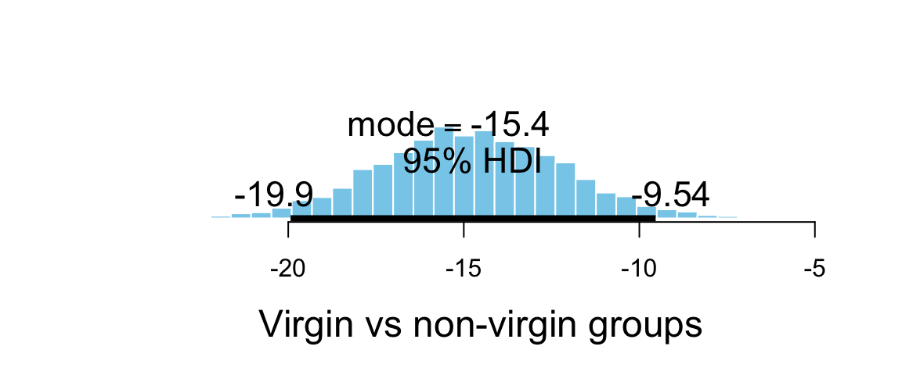
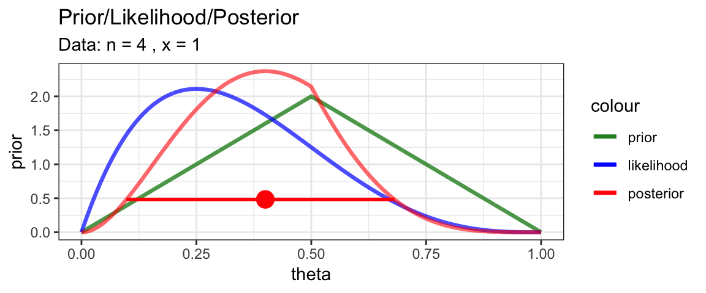
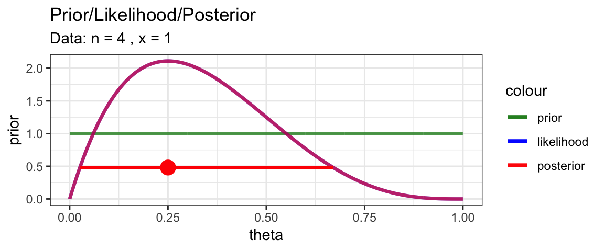
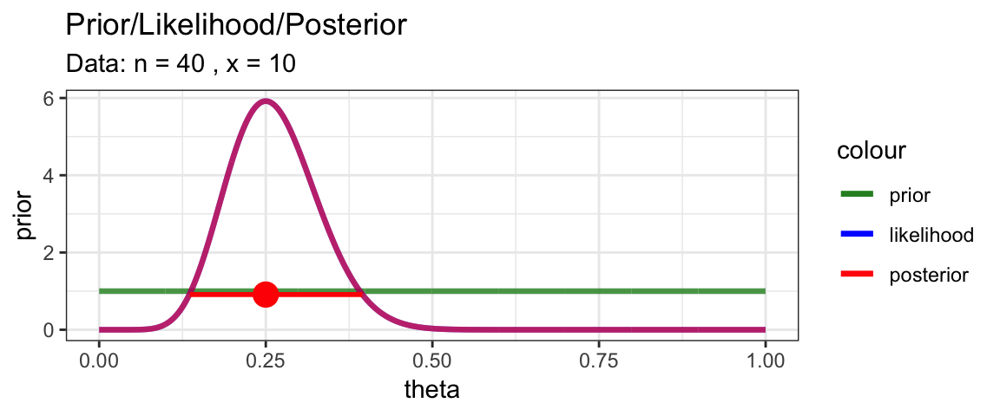
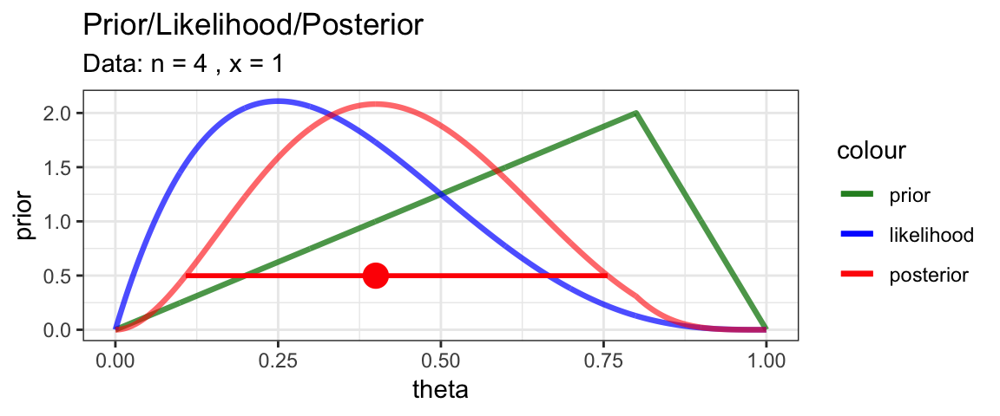
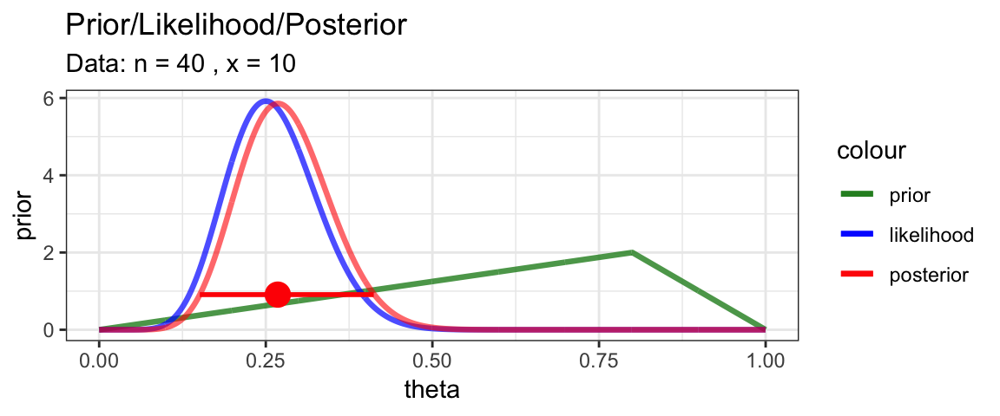

5 Bayes’ Rule and the Grid Method
5.1 The Big Baysian Idea
- Model specifies
\[\begin{align*} \mbox{prior: } \quad & p(\mbox{parameter values}) \\ \mbox{likelihood: } \quad & p(\mbox{data values} \mid \mbox{parameter values}) \end{align*}\]
- Bayes rule + data gives
\[\begin{align*} \mbox{posterior: } \quad & p(\mbox{parameter values} \mid \mbox{data values}) \end{align*}\]
Furthermore, the computation of the posterior seems straightforward since, letting \(D\) be the data values and \(\theta\) the parameter values, we have
\[\begin{align*} p(\theta \mid D) &= \frac{ p(\theta) \cdot p(D \mid \theta)}{p(D)} \\ &= \frac{ p(\theta) \cdot p(D \mid \theta)}{\sum_{\theta^*} p(\theta^*) p(D \mid \theta^*)} \mbox{or} \frac{ p(\theta) \cdot p(D \mid \theta)}{\int p(\theta^*) p(D \mid \theta^*) \; d\theta^*} \\ \end{align*}\]
Notice that the denomiator sums or integrates over all possible numerators, so it is just a normalizing constant that guarntees that total probability is 1 for the posterior distribution.
Another way of saying all this is that
\[\begin{align*} p(\theta \mid D) &\propto p(\theta) \cdot p(D \mid \theta) \\[3mm] \mbox{posterior} & \propto \mbox{prior} \cdot \mbox{likelihood} \\[3mm] \mbox{kernel of posterior} &= \mbox{prior} \cdot \mbox{likelihood} \end{align*}\]
That last line is worth repeating. It’s the most important equation in this course:
\[ \LARGE \mbox{(kernel of) posterior} = \mbox{prior} \cdot \mbox{likelihood} \]
If the number of possible values for \(\theta\) is small (so we could just do all the arithmetic by brute force) or if the integrals and sums are easy to compute, then Bayesian updating (computing the posterior) is relatively easy. We’ll start with examples (at least approximately) in those two happy situations and worry about some of the complications a little bit later.
5.2 Estimating the bias in a coin using the Grid Method
Big ideas:
- discretize the parameter space
- compute prior and likelihood at each “grid point” in the discretized parameter space
- compute (kernel of) posterior as prior \(\cdot\) likelihood at each “grid point”
- normalize to get posterior
Below we will see how to perform these four steps in R.
5.2.1 Creating a Grid
The paramter is \(\theta\) and we will discretize by selection 1001 grid points from 0 to 1 by 0.001.
CoinsGrid <-
expand.grid(
theta = seq(0, 1, by = 0.001)
)
head(CoinsGrid)| theta |
|---|
| 0.000 |
| 0.001 |
| 0.002 |
| 0.003 |
| 0.004 |
| 0.005 |
Now let’s add on the prior
library(triangle)
CoinsGrid <-
expand.grid(
theta = seq(0, 1, by = 0.001)
) %>%
mutate(
prior = dtriangle(theta) # triangle distribution
)
gf_area(prior ~ theta, data = CoinsGrid)
Now the likelihood for a small data set: 1 success out of 4 trials.
This is the trickiest part. dbinom(x, size = n, prob = theta) will calculate
the probability that we want for a given value of x, n, and theta. We
want to do this
- for each value of
theta - but using the same values for
xandneach time
purrr:map_dbl() helps us tell R how to do this. Each value of
theta gets plugged in for .x and a vector of numbers (dbl stands for
double – computer talk for real number) is returned.
library(purrr)##
## Attaching package: 'purrr'## The following object is masked from 'package:mosaic':
##
## crossx <- 1; n <- 4
CoinsGrid <-
expand.grid(
theta = seq(0, 1, by = 0.001)
) %>%
mutate(
prior = dtriangle(theta), # triangle distribution
likelihood = map_dbl(theta, ~ dbinom(x = x, size = n, .x))
)
gf_area( prior ~ theta, data = CoinsGrid, alpha = 0.3) %>%
gf_area( likelihood ~ theta, data = CoinsGrid, alpha = 0.3, fill = "green") 
Note: Likelihoods are NOT pmfs or pdfs, so the total area under a likelihood function is usually not 1. We can make a normalized version for the purpose of plotting. (Recall, we will normalize the posterior at the end anyway, so it is fine if the likelihood is off by a constant multiple at this point in the process.) We do this by dividing by sum of the likelihoods and by the width of the spaces between grid points.
library(purrr)
x <- 1; n <- 4
CoinsGrid <-
expand.grid(
theta = seq(0, 1, by = 0.001)
) %>%
mutate(
prior = dtriangle(theta), # triangle distribution
likelihood = map_dbl(theta, ~ dbinom(x = x, size = n, .x)),
likelihood1 = likelihood / sum(likelihood) / 0.001 # "normalized"
)
gf_area( prior ~ theta, data = CoinsGrid, alpha = 0.3) %>%
gf_area( likelihood1 ~ theta, data = CoinsGrid, alpha = 0.3, fill = "green") 
The hardest part of the coding (computing the likelihood) is now done. Getting the posterior is as simple as computing a product.
library(purrr)
x <- 1; n <- 4
CoinsGrid <-
expand.grid(
theta = seq(0, 1, by = 0.001)
) %>%
mutate(
prior = dtriangle(theta), # triangle distribution
likelihood = map_dbl(theta, ~ dbinom(x = x, size = n, .x)),
likelihood1 = likelihood / sum(likelihood) / 0.001, # "normalized"
posterior0 = prior * likelihood, # unnormalized
posterior = posterior0 / sum(posterior0) / 0.001 # normalized
)
gf_area( prior ~ theta, data = CoinsGrid, alpha = 0.3) %>%
gf_area( likelihood1 ~ theta, data = CoinsGrid, alpha = 0.3, fill = "green") %>%
gf_area( posterior ~ theta, data = CoinsGrid, alpha = 0.3, fill = "steelblue") 
gf_line( prior ~ theta, data = CoinsGrid) %>%
gf_line( likelihood1 ~ theta, data = CoinsGrid, color = "green") %>%
gf_line( posterior ~ theta, data = CoinsGrid, color = "steelblue") 
5.2.2 HDI from the grid
The CalvinBayes packages includes a function hdi_from_grid() to compute
highest density intervals from a grid.
The basic idea of the algorithm used is to
sort the grid by the posterior values.
The mode will be at the end of the list, and the
“bottom 95%” will be the HDI (or some other percent if we choose a
different level).
This method works as long as the posterior is unimodal, increasing to the mode
from either side.
hdi_from_grid() is slightly more complicated because it handles things like
multiple parameters and performs some standardization (so we can work with
kernels, for example). It does assume that the grid is uniform (ie, evenly
spaced).
We simply provide
- the data frame containing our grid calculations,
pars: the name of the parameter (or parameters) for which we want intervals (default is the first column in the grid),prob: the probability we want in covered by our interval (0.95 by default),posterior: the name of the column containing the posterior kernel values ("posterior"by default)
library(CalvinBayes)
hdi_from_grid(CoinsGrid, pars = "theta", prob = 0.95)| param | lo | hi | prob | height | mode_height | mode |
|---|---|---|---|---|---|---|
| theta | 0.098 | 0.681 | 0.9501 | 0.4833 | 2.37 | 0.4 |
With this information in hand, we can add a representation of the 95% HDI to our plot.
HDICoins <- hdi_from_grid(CoinsGrid, pars = "theta", prob = 0.95)
gf_line(posterior ~ theta, data = CoinsGrid) %>%
gf_hline(yintercept = ~height, data = HDICoins,
color = "red", alpha = 0.5) %>%
gf_pointrangeh(height ~ mode + lo + hi, data = HDICoins,
color = "red", size = 1) %>%
gf_labs(caption = "posterior mode and 95% HPI indicated in red")
5.2.3 Automating the grid
Note: This function is a bit different from CalvinBayes::BernGrid().
MyBernGrid <- function(
x, n, # x successes in n tries
prior = dunif,
resolution = 1000, # number of intervals to use for grid
...) {
Grid <-
expand.grid(
theta = seq(0, 1, length.out = resolution + 1)
) %>%
mutate( # saving only the normalized version of each
prior = prior(theta, ...),
prior = prior / sum(prior) * resolution,
likelihood = dbinom(x, n, theta),
likelihood = likelihood / sum(likelihood) * resolution,
posterior = prior * likelihood,
posterior = posterior / sum(posterior) * resolution
)
H <- hdi_from_grid(Grid, pars = "theta", prob = 0.95)
gf_line(prior ~ theta, data = Grid, color = ~"prior",
size = 1.15, alpha = 0.8) %>%
gf_line(likelihood ~ theta, data = Grid, color = ~"likelihood",
size = 1.15, alpha = 0.7) %>%
gf_line(posterior ~ theta, data = Grid, color = ~"posterior",
size = 1.15, alpha = 0.6) %>%
gf_pointrangeh(
height ~ mode + lo + hi, data = H,
color = "red", size = 1) %>%
gf_labs(title = "Prior/Likelihood/Posterior",
subtitle = paste("Data: n =", n, ", x =", x)) %>%
gf_refine(
scale_color_manual(
values = c(
"prior" = "forestgreen",
"likelihood" = "blue",
"posterior" = "red"),
breaks = c("prior", "likelihood", "posterior")
)) %>%
print()
invisible(Grid) # return the Grid, but don't show it
}This function let’s us quickly explore several scenarios and compare the results.
- How does changing the prior affect the posterior?
- How does changing the data affect the posterior?
library(triangle)
MyBernGrid(1, 4, prior = dtriangle, a = 0, b = 1, c = 0.5)
MyBernGrid(1, 4, prior = dunif)
MyBernGrid(10, 40, prior = dtriangle, a = 0, b = 1, c = 0.5)
MyBernGrid(10, 40, prior = dunif)
MyBernGrid(1, 4, prior = dtriangle, a = 0, b = 1, c = 0.8)
MyBernGrid(10, 40, prior = dtriangle, a = 0, b = 1, c = 0.8)
MyBernGrid(10, 40, prior = dbeta, shape1 = 25, shape2 = 12)
5.3 Exercises
Suppose we have a test with a 99% hit rate (sensitivity) and a 5% false alarm rate (95% specificity) just like in the example on page 103 of DBDA2e. Now suppose that a random person is selected, has a first test that is positive, then is retested and has a second test that is negative. Taking into account both tests, what is the probability that the person has the disease?
Hint: We can use the the posterior after the first test as a prior for the second test. Be sure to keep as many decimal digits as possible (use R and don’t round intermediate results).
Note: In this problem we are assuming the the results of the two tests are independent, which might not be the case for some medical tests.
More testing.
- Suppose that the population consists of 100,000 people. Compute how many people would be expected to fall into each cell of Table 5.4 on page 104 of DBDA2e. (To compute the expected number of people in a cell, just multiply the cell probability by the size of the population.)
You should find that out of 100,000 people, only 100 have the disease, while 99,900 do not have the disease. These marginal frequencies instantiate the prior probability that \(p(\theta = \frown) = 0.001\). Notice also the cell frequencies in the column \(\theta = \frown\), which indicate that of 100 people with the disease, 99 have a positive test result and 1 has a negative test result. These cell frequencies instantiate the hit rate of 0.99. Your job for this part of the exercise is to fill in the frequencies of the remaining cells of the table.
- Take a good look at the frequencies in the table you just computed for the previous part. These are the so-called “natural frequencies” of the events, as opposed to the somewhat unintuitive expression in terms of conditional probabilities (Gigerenzer & Hoffrage, 1995). From the cell frequencies alone, determine the proportion of people who have the disease, given that their test result is positive.
Your answer should match the result from applying Bayes’ rule to the probabilities.
Now we’ll consider a related representation of the probabilities in terms of natural frequencies, which is especially useful when we accumulate more data. This type of representation is called a “Markov” representation by Krauss, Martignon, and Hoffrage (1999). Suppose now we start with a population of \(N = 10,000,000\) people. We expect 99.9% of them (i.e., 9,990,000) not to have the disease, and just 0.1% (i.e., 10,000) to have the disease. Now consider how many people we expect to test positive. Of the 10,000 people who have the disease, 99%, (i.e., 9,900) will be expected to test positive. Of the 9,990,000 people who do not have the disease, 5% (i.e., 499,500) will be expected to test positive. Now consider re-testing everyone who has tested positive on the first test. How many of them are expected to show a negative result on the re-test?
What proportion of people who test positive at first and then negative on retest, actually have the disease? In other words, of the total number of people at the bottom of the diagram in the previous part (those are the people who tested positive then negative), what proportion of them are in the left branch of the tree? How does the result compare with your answer to Exercise 5.1?
Consider again the disease and diagnostic test of the previous two exercises.
Suppose that a person selected at random from the population gets the test and it comes back negative. Compute the probability that the person has the disease.
The person then gets re-tested, and on the second test the result is positive. Compute the probability that the person has the disease. How does the result compare with your answer to Exercise 5.1?
Modify
MyBernGrid()so that it takes an argument specifying the probability for the HDI. Using it to create a plot showing 50% HDI for theta using a symmetric triangle prior and data consisting of 3 success and 5 failures.